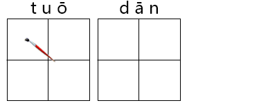
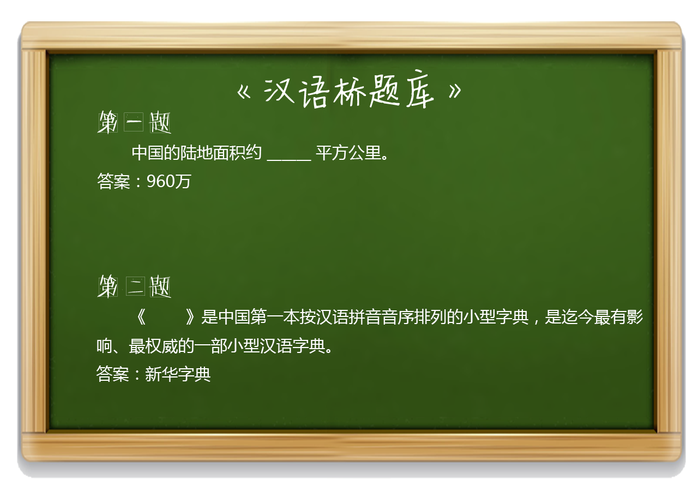

2016-12-08阅读（14,032）

仔细听题
题目有点绕啊
正确答案：A

脱单是网络流行语。脱单指找到男（女）朋友。
知识拓展：
“妻子”的100种称呼
1、烧锅的：安庆话
2、家主婆：上海、太仓话
3、婆子：南昌话
4、衰婆：广东
5、婆娘：重庆、成都、云南、绵阳、陜西
6、婆姨：宁夏、陜西
7、婆婆子：天门、长沙
8、戒指婆、架子婆：苏州话
9、婆妹：南方方言
10、老婆子、老太婆：年长男人的称呼
11、老布、老不：上海话
12、老马（mo)、老母、老嫲：绍兴、杭州、常州、福州
13、老娘儿：成都
14、老妪：绩溪话
15、老奶奶：南陵称呼岁数大的
16、老娘、老姩（nian）：桐乡
17、老妞儿：成都话
18、老安人：吴语象山港周边
19、老拧：浙江慈溪
20、老伴：老人的一般称呼
21、老婆：一般称呼
22、老板子：内蒙古乌盟方言、陕西
23、老媪、老约、老佞、老迎：温州话
24、老爱：北方俗称、天津
25、老蒯：山东、吉林
26、老嫚（mǎn）子：沭阳，老年男子称呼妻子
27、老妈：莆田
28、女人：盐城
29、女将、女匠：通泰、泰兴、兴化、海安
30、女客：椒江、苍溪
31、女佬：宜兴
32、女们：盐城滨海
33、后屋里：汉川
34、屋人：河南南部、随州
35、屋里头的：河南人
36、屋里厢、伲屋里厢个：苏州
37、厝里：闽南、福州话
38、家里的：河北人
39、家里头：安徽舒城
40、我家里的、旮里：宣城、池州
41、家溜（里）人们：德州
42、屋里的、我屋里的：江西修水
43、屋里人：无锡
44、孩子他妈：北方话
45、媳妇：河南话、陕西、徐州
46、娘们儿：天津
47、媳妇子：宁夏话
48、娘儿们：北方方言。
49、堂客：湖南、重庆
50、夫娘：平江
51、娘子：吴语太湖周边
52、马马、马马儿：通泰、赣北、六合、海安、如皋
53、劣魔：龙港蛮话
54、叮当子：南陵叫情人
55、内卡：宁波宁海话
56、袖的：河北邯郸
57、捞佛：海南
58、马呢：江西湖口
59、阅客：天台
60、馁瓜：浙江永康
61、内子：台湾
62、内人：四川合江
63、女古拧：江西鹰潭
64、喜子：日照
65、奶奶（na na）：南通
66、新妇：赣北、南湘
67、窝里狗：常熟话
69、大娘：四川自贡
70、我家老娘们：东北
71、里疼：九江话
72、诸娘人：福州话
73、锅舍的：古交
74、姑娘：宜城
75、拐仔：柳州话
76、伙计：随州
77、那口子：山西太原
78、俺那口子：东北话
79、领导：流行语
80、烧火的、做饭的：德州
81、妇儿：北京方言
82、内人：四川合江
83、嫁(GA)娘：凤凰话
84、细妹姆：广东丰顺客方言
85、穿鞋的：南方方言
86、那娘们：对老婆厌恶时
87、女朋友：未婚时的一般称呼
88、伢他妈：南方人
89、孩他娘：北方人
90、老Mu、财星：常州
91、家属：北方话
92、公喇子：江西
93、对象：北方话、徐州话
94、右客：湖北鄂西山区
95、内掌柜、内当家：在家掌权的妻子
96、浑家：早期白话
97、太太：有权势的人称自己的妻子
98、夫人：大众通俗称呼
99、妻子：大众通俗称呼
100、爱人：一般称呼
（以上内容编辑自网络；图片选自网络）
【答题互动】

【有关汉语桥】
“汉语桥”是由孔子学院总部/国家汉办举办的国际中文赛事，是世界人文交流领域的知名品牌活动 。“汉语桥”中文比赛已成为外国学生学习汉语，了解中国的重要平台，在中国与世界各国青年之间架起了一座沟通心灵的桥梁。
内容制作：金杰、李畅